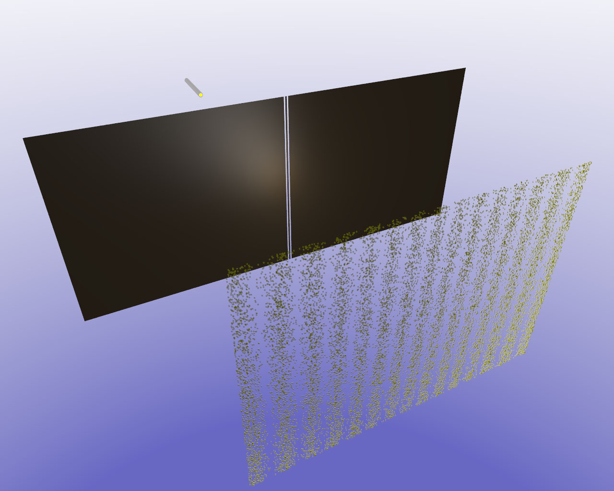

量子力學 (Quantum Mechanics)
量子力學？量子糾纏？
觀測時結果不同！？
無法掌握原理卻開始學著利用！
# 前言
本文僅分享概念而非深入討論，並且為自身認知概念之分享。
非專業人士，內容粗糙且可能有誤，徵求完美者，請斟酌觀看。
# 量子 (Quantum) ＆ 量子力學 (Quantum Mechanics)
「 量子 」一詞源自於拉丁語「 Quantum 」，意指「 有多少 」。
「 量子力學 (Quantum Mechanics) 」為物理學研究量子化的一個分支，屬於研究「 微觀世界 」的科學理論。
其實就現今的發展而言，我們對於「 量子 」這東西其實還是存在許多未解之迷，對於它神奇的運作原理，目前只能暫且先不討論，我們現在需要做的是，認識它並懂的使用它。
# 宏觀 (Macrocosm) 與 微觀 (Microcosm) 世界
- 宏觀 (Macrocosm)
- 肉眼所能看見的物體稱為「 宏觀物體 」，在宏觀的空間裡，發生的所有現象稱為「 宏觀現象 」，則「 宏觀世界 」為「 宏觀物體 」及「 宏觀現象 」之總稱。
- 微觀 (Microcosm)
- 渺小至肉眼所不能看見的物體稱為「 微觀物體 」，在微觀的空間裡，發生的所有現象稱為「 微觀現象 」，則「 微觀世界 」為「 微觀物體 」及「 微觀現象 」之總稱。
# 量子糾纏 (Quantum Entanglement)
量子力學中，當幾個粒子在互相作用影響後，各個粒子的特性被綜合成整體性質，已經無法對粒子單獨描述其性質，僅能描述整體系統時，則此現象稱為「量子糾纏 (Quantum Entanglement)」。
並且神奇的是，在量子系統下的一對糾纏粒子不論相隔多遠，都能透過未知的方式互相連通、感應彼此。
# 雙縫實驗 (Double-Slit Experiment)
下圖是雙縫實驗的示意圖 (來源 - Wiki 維基百科)。
在圖中可以看到將光打入一塊含有兩條縫隙的隔板中時，另一端會因為光源從兩個縫隙中跑出而分開，形成兩個分裂的光，並且在兩個光波互相干擾的情況下，牆上印照出數條明暗不一的光條。

# 使用「 單粒子 」進行「 雙縫實驗 (Double-Slit Experiment) 」
我們知道「 光 」是由「 光子 」所組成，而光子是不可再被分割的。
使用「 光子 」進行「 雙縫實驗 (Double-Slit Experiment) 」的實驗結果是科學史上，一個極度違反我們所認知物理常識的實驗結果。
一開始科學家使用光子進行雙縫實驗時，並無發現任何異狀，和預想的一樣，光子就是不可分裂的，因此在雙縫隔板中，光子一次只能穿越一條縫隙，若是同時打入多個光子分別穿越兩條縫隙，此時另一頭也會起到干擾作用，這也是必然的，畢竟光子與光子之間的波還是會互相干涉的。
到上述實驗為止，一切皆為正常現象，但接下來的實驗才是令科學家們感到驚訝的。
科學家嘗試在雙縫隔板中，一樣持續的打入光子並分別穿越兩條縫隙，但是這一次改成「 不同時 」，也就是說光子是輪流打入的，按理來說應該是不存在干涉情形的，一開始光子正常的看似沒受到干擾，但在持續的打入光子後，隔板的另一頭居然慢慢的形成與剛剛相似的「數條明暗不一的光條」。
# 波函式 (Wave Function)
其實，在「隔板」與「印照光條的那面牆」中間，有著一張我們看不見的「網子」，這張網子能夠對於粒子起到有規律的干擾作用。每個粒子在打入縫隙，從另一頭出來後就開始接受干擾，並且隨機落在此干擾網所干擾後的範圍內，注意，此範圍是固定的，但有多個範圍，落點是隨機的，也就是說，「 範圍 」就是上述的「 數條明暗不一的光條 」中的「 光條 」，而此光條有數個，光條範圍內的每個點都有可能是光子在干擾網干擾後的落點，因此只要光子打入夠多的數量，就能顯現越清楚的「光條」，等到落點顯現的夠多夠明顯後，就是剛剛所說的「數條明暗不一的光條」。
所以會不會有可能，在一開始的實驗中，同時打入光子至雙縫隔板而產生的數條光條，並非是隔板後兩個光子之間的波在互相干擾，而從頭到尾都是干擾波在干擾呢？
科學家想更進一步的了解這張無形的干擾網，他們在「隔板」至「印出光條的牆」之間使用儀器去監控，打算靠這樣觀察到光子在受干擾時的軌跡，結果… 更神奇的事情發生了…
# 波粒二象性 (Wave-Particle Duality)
在儀器的監控下，光子打入雙縫隔板縫隙中，此時，在隔板後，牆上顯示的居然僅僅只是兩條大小一致的「 光的直射 」！ 等等，這跟未觀測時的結果不同啊！它就好像知道我們在看著它一樣。
未觀測與觀測的運行結果不同，在量子力學中，
這被稱作「 波粒二象性 (Wave-Particle Duality) 」。
# 波函式坍縮 (Wave Function Collapse)
這張干擾網，好像就在我們觀測它的同時，就失去了干擾的作用。
「某些量子力學體系與外界發生某些作用後波函數發生突變，變為其中一個本徵態或有限個具有相同本徵值的本徵態的線性組合的現象。」 - Wiki 維基百科
至於為什麼在被觀察時，會對 光子 (或其他受測粒子) 的運動軌跡造成改變，這點到目前還是個問號。
# 感想
量子力學的技術若是能在日後成功掌握，這必將是人類科技發展的一大步！量子電腦的發展，超越超級電腦的運算速度，用在許多諸如醫學或者數學上的運算則會有極高的效率。
同時我也擔心該項技術被有心人士利用，例如利用量子電腦的運算速度實施「密碼爆破」。
不過想必該技術在普及之前，也一定會實施預防的相關方案… 吧？
 BTC
BTC PayPal
PayPal